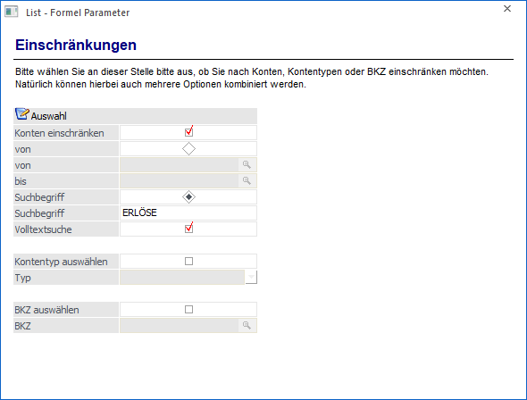
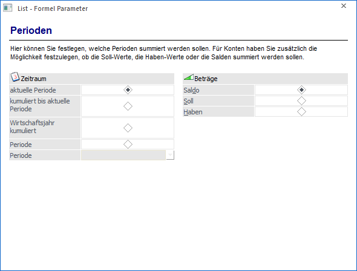

Mit dieser Funktion können Konten nach verschiedenen Kriterien zusammengefasst werden. Auch hier können folgende Einschränkungen vorgenommen werden.
Im ersten Schritt muss das Wirtschaftsjahr angegeben werden.

Achtung
Intern wird nicht das Wirtschaftsjahr selbst, sondern eine Nummer gespeichert. D.h. nach einem Jahresabschluss ist automatisch wieder das aktuelle Wirtschaftsjahr im Zugriff. Das wurde deshalb so gemacht, dass nach einem Jahresabschluss nicht alle Listen geändert werden müssen.
Durch Anklicken des VOR-Buttons gelangt man in den nächsten Schritt, wo wieder die Feldauswahl getroffen werden kann.

In diesem Fenster können nun Einschränkungen der Konten vorgenommen werden, welche für den Ausdruck verwendet werden sollen.
Ø Konten einschränken
Wird diese Option aktiviert, können 2 verschiedene Selektionen vorgenommen werden:
ü von / bis
Es kann ein
bestimmter Kontenbereich eingeschränkt werden (z.B. Konto 4000 bis 4099)
ü Suchbegriff
Es kann - wie beim
Matchcode - ein Suchbegriff (z.B. Erlöse) eingegeben werden, dadurch werden nur
die Konten verwendet, die den Suchbegriff entsprechen. Mit der Option
"Volltextsuche" kann entschieden werden, ob der Suchbegriff am Anfang oder
irgendwo in der Kontenbezeichnung vorkommen soll.
Ø Kontentyp auswählen
Wenn diese Option aktiviert wird, dann kann aus der nachfolgenden Auswahllistbox der Kontentyp (Bilanzkonto, Erfolgskonto, Debitoren, Kreditoren) gewählt werden.
Ø BKZ auswählen
Wenn diese Option aktiviert wird, dann kann im nachfolgenden Feld ein BKZ ausgewählt werden, wobei über die Matchcode-Funktion nach allen BKZ gesucht werden kann.
Diese 3 Optionen wirken additiv, d.h. es werden alle 3 Selektionen berücksichtigt. Durch Anklicken des VOR-Buttons gelangt man in den letzten Schritt. Durch Anklicken des ZURÜCK-Buttons können vorgenommene Einstellungen nochmals verändert werden.

Im letzten Schritt kann noch definiert werden, welche Perioden bzw. welcher Wert selbst angedruckt werden soll.
Bei den Perioden stehen folgende Optionen zur Verfügung:
ü aktuelle Periode
Es wird die
aktuell eingestellte Periode (Buchungsperiode aus dem Mandantenstamm)
ausgewertet.
ü kumuliert bis aktuelle
Periode
Es werden alle Perioden (vom WJ-Beginn) bis zur aktuell eingestellten
Periode (Buchungsperiode aus dem Mandantenstamm) ausgewertet.
ü Wirtschaftsjahr kumuliert
Es
wird das komplette Wirtschaftsjahr ausgewertet. Bei dieser Option werden auch
die EB- und AB-Werte mitberücksichtigt.
ü Periode
Aus der Auswahlliste
kann eine Periode ausgewählt werden, für die die Werte ausgewertet werden
sollen.
Auf der rechten Seite kann jetzt noch der Wert ausgewählt werden, der tatsächlich gedruckt werden soll. Dabei stehen wieder 3 Optionen zur Verfügung:
ü Saldo
Es wird der Saldo des
angesprochenen Kontos angedruckt.
ü Soll
Es wird der Soll-Wert des
Kontos angedruckt (macht z.B. dann Sinn, wenn man die Umsätze eines Debitors
auswerten will).
ü Haben
Es wird nur der
Haben-Wert des Kontos angedruckt (z.B. wenn man die Umsätze bei einem
Lieferanten auswerten will).
Durch Anklicken des Buttons "Ok" wird die Formel in die Listdefinition übernommen. Dort kann sie durch einen Doppelklick auf die Spalte "Sp." editiert werden. Durch Anklicken des Buttons "Zurück" können bereits vorgenommene Einstellungen verändert werden.
Hinweis
Bei der Funktion "SUMKTOEXT" werden immer der Salden der Nebenbuchkonten verwendet, bzw. "normale" Konten, die keinem Hauptbuchkonto zugewiesen sind.